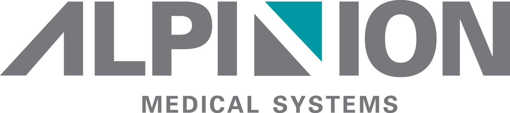

Gaumard
Con más de 75 años de experiencia en simulación de atención médica, Gaumard sigue cumpliendo su compromiso de brindar a nuestros clientes soluciones innovadoras, servicios de clase mundial y un valor excepcional.
|
|
JW Bio ScienceHemos localizado una amplia gama de dispositivos médicos, como máquinas de rayos X digitales con características de vanguardia, luces quirúrgicas LED, incubadoras, mesas de operación y mesas de examen. Además, hemos adquirido certificaciones CE e ISO en reconocimiento a nuestros excelentes productos y tecnologías, y hemos impulsado nuestros esfuerzos para expandirnos y afianzarnos en los mercados internacionales. |
|
SG HealthCareSG HealthCare es el líder mundial en la industria del equipo de diagnóstico médico con avances tecnológicos de clase mundial. Hoy en día, continuamos difundiendo la importancia de "ver más" y "saber mejor" en lugar de un diagnóstico mediocre. La información de nuestros sistemas permite un análisis agudo, aumentando así la posibilidad de salvar vidas. Los sistemas de rayos X, MRI y ecografía hechos por SG HealthCare son ampliamente utilizados en todo el mundo, desde las clínicas más pequeñas hasta los hospitales nacionales. SG HealthCare se ha demostrado como revolucionaria en el campo de los sistemas de diagnóstico médico y continúa ayudando a las personas de todo el mundo a ver mejor con nosotros. |
|
|  |
Alpinion Medical SystemsDesde que comenzamos nuestro negocio de ecografía en 2007, nos hemos centrado en desarrollar tecnologías centrales y brindar el mejor valor a nuestros clientes. Como innovador en valor en la industria médica, ALPINION amplía progresivamente nuestro alcance de negocios vertical y horizontalmente en cada área de ecografía. Alpinion está ubicado en la cumbre de la industria médica y está determinado a ser uno de los pilares de un socio de por vida para los clientes, la sociedad y la humanidad. Cada miembro de ALPINION lucha por la innovación como un experto y un pionero en su campo tecnológico. ALPINION está creando un mercado médico innovador en el que más clientes puedan recibir servicios médicos de alta calidad. |